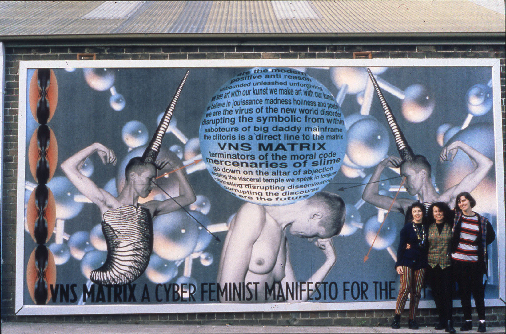

A CYBERFEMINIST MANIFESTO FOR THE 21ST CENTURY
A Cyberfeminist Manifesto for the 21st Century was a project in multiple media that gave vivid expression to the emerging political position of cyberfeminism, which saw new technology as an opportunity to disrupt society’s patriarchal norms, and to have fun doing it. The manifesto was authored in a mode that spoke to the conditions of early network culture: collaborative, plagiaristic, possibly drug-fueled, and pornographic. The resulting text was distributed by fax, snail mail, paste-up poster, billboard, and online post, adopting the techniques of propaganda as an art practice. Through its circulation, it began to generate new versions, spinoffs, and critiques, giving rise to new worlds for artists and theorists to inhabit.
Artist's Work
RETURN TO NET ART ANTHOLOGY
https://anthology.rhizome.org/